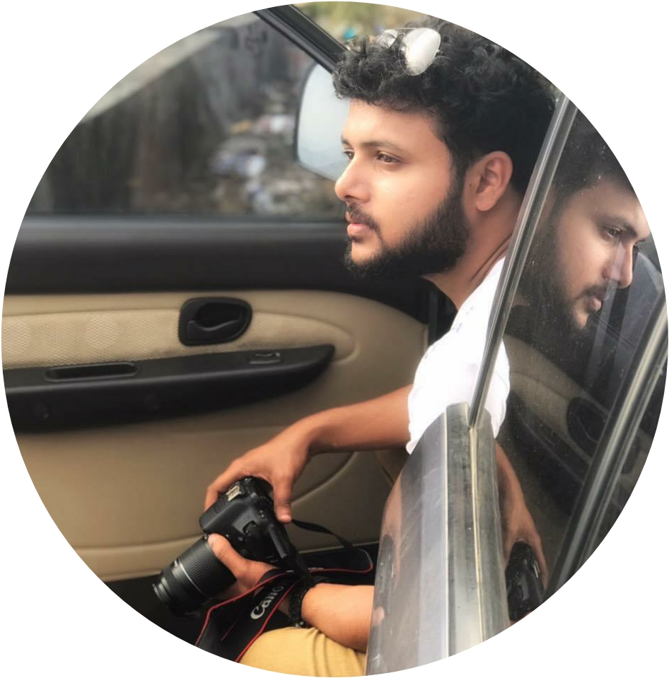

I lead large-scale engineering programs across cloud data, CDN and security, aligning cross-functional teams from concept to launch, and I build AI-powered tools that drive real productivity gains.
I'm a Senior Technical Program Manager at Akamai Technologies, where I drive corporate AI transformation and lead high-profile AI infrastructure and Data Experience programs, including DataStream, one of Akamai's critical data products. Over 15 years I've grown from systems and DevOps engineering into program leadership at Akamai, Cisco and Infosys. That background lets me work closely with engineers on architecture and distributed systems while keeping executives aligned on goals, trade-offs and outcomes.
Where I've worked and what I've delivered
Program leadership, delivery frameworks and AI tooling
Continuous learning
Small tools I built for myself: local-first, lightweight and private by design
A lightweight to-do list with both a command-line interface and a browser UI, sharing a single local SQLite database.
A personal expense tracker that runs locally in the browser, installable as a Progressive Web App and usable offline.
What keeps me curious outside the office
Nothing beats the magic of a darkened theater. I'm a firm believer that a great score is half the movie.
Test cricket is the ultimate test of character. I track the stats, the pitches, and the swings of momentum.
Weekends are defined by kickoff times. The tactical battles and the sheer unpredictability keep me hooked.
Observing the ever-changing landscape of global and local politics. I love a good debate grounded in facts.
A quiet corner and a good book. I enjoy diving deep into new narratives, histories, and perspectives.
Exploring new cultures, cuisines, and landscapes. I believe the best education comes from a stamped passport.
Open to conversations about program leadership, AI transformation, and building great engineering teams.